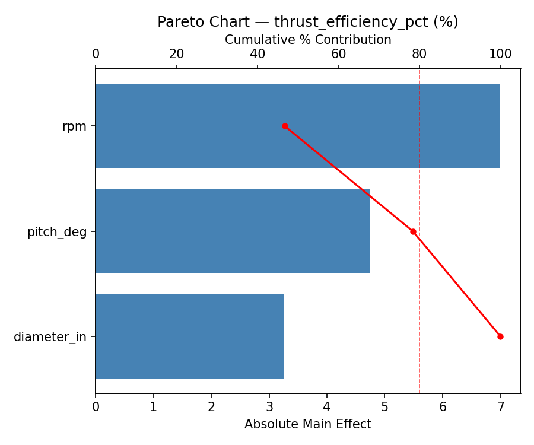
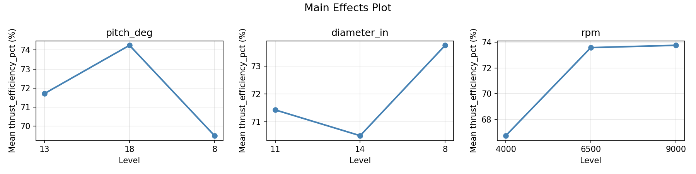
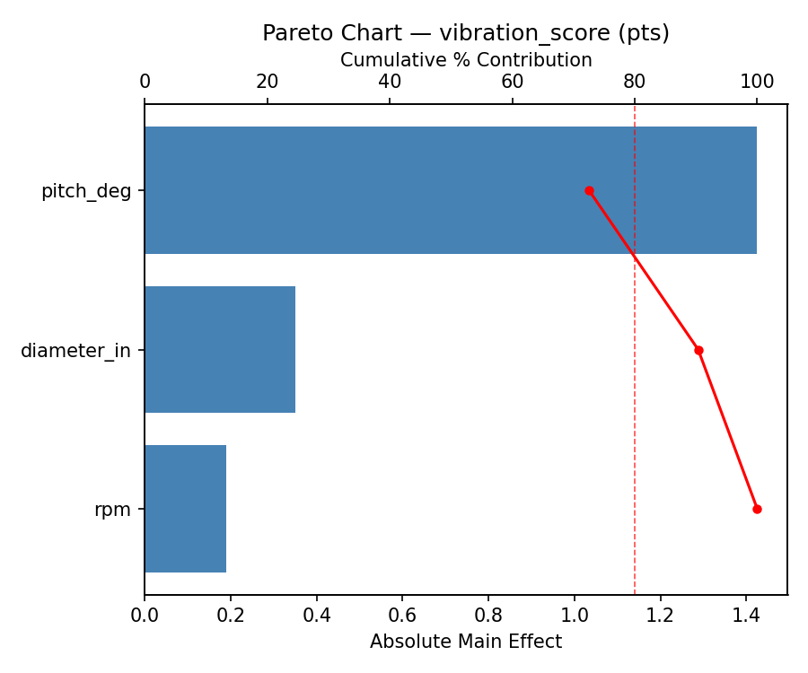
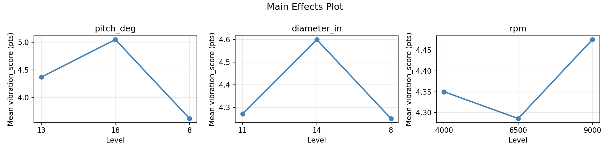
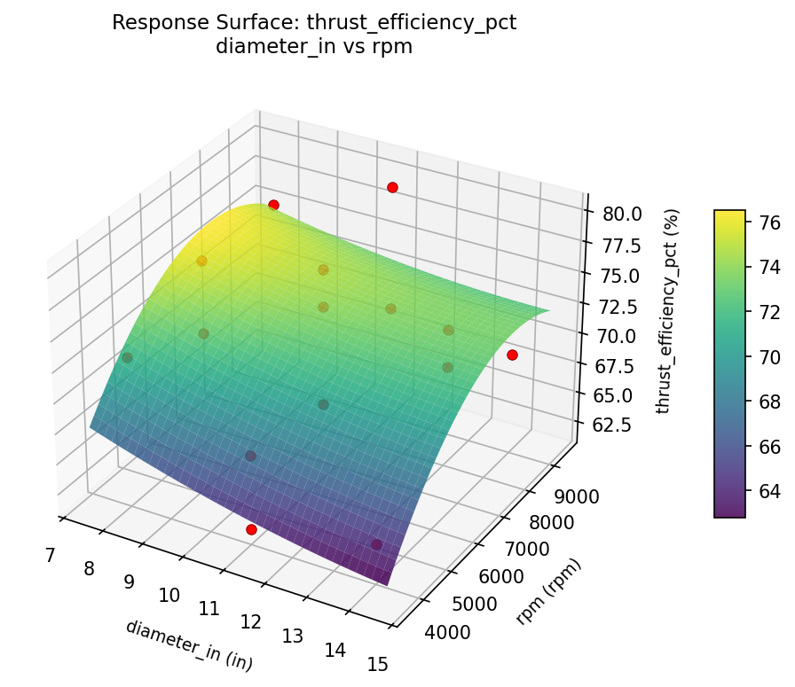
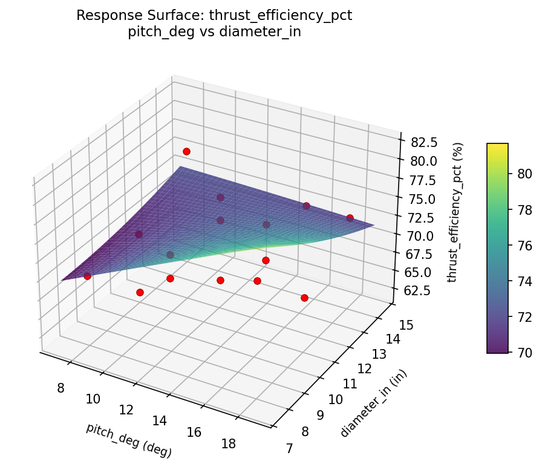
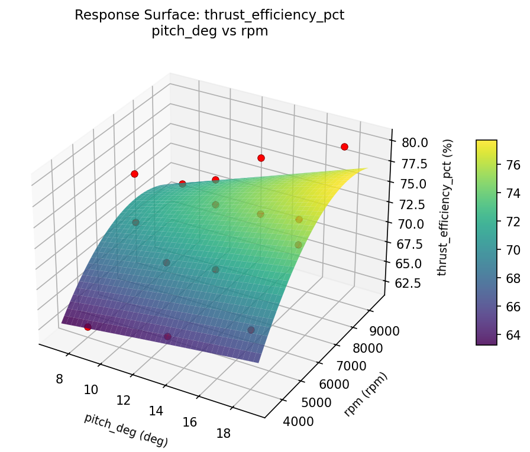
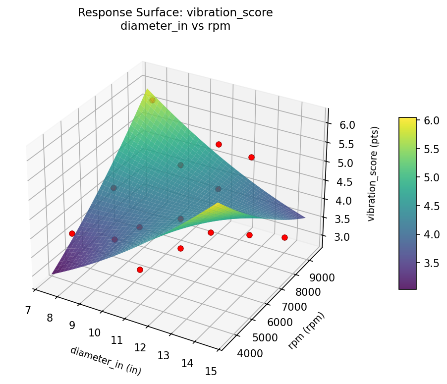
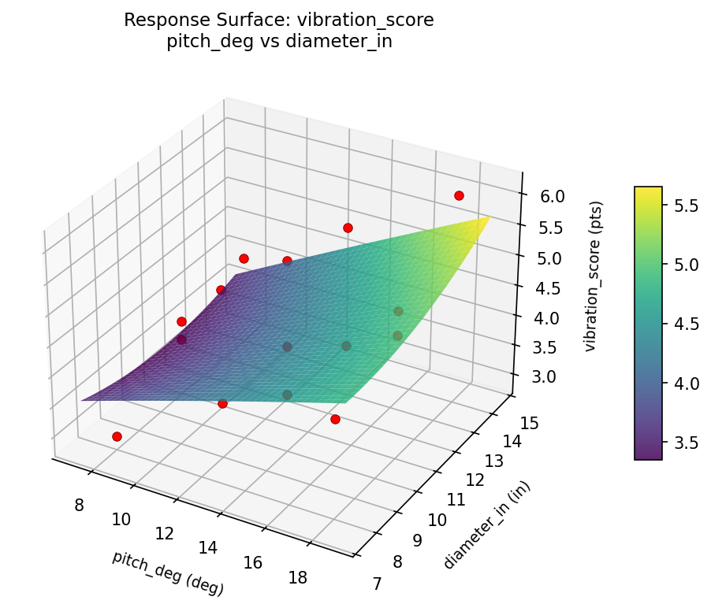
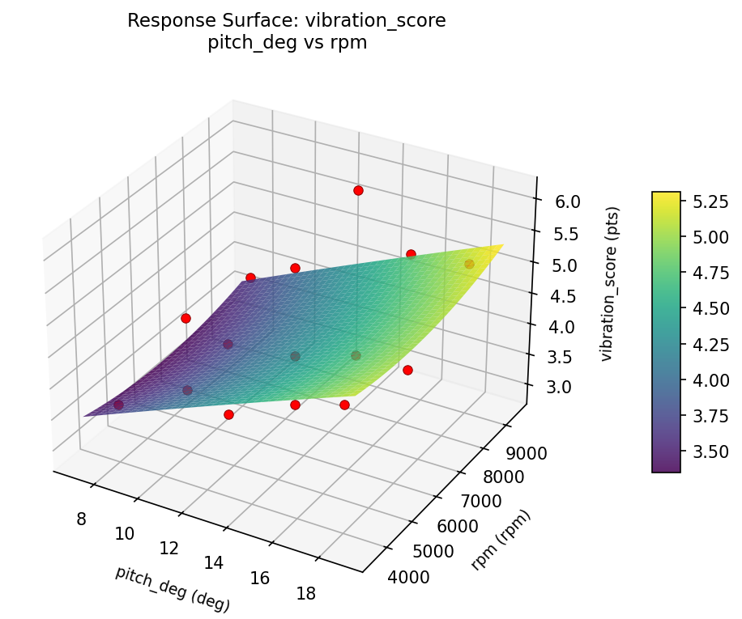

Summary
This experiment investigates propeller pitch optimization. Box-Behnken design to maximize thrust efficiency and minimize vibration by tuning blade pitch, diameter, and RPM.
The design varies 3 factors: pitch deg (deg), ranging from 8 to 18, diameter in (in), ranging from 8 to 14, and rpm (rpm), ranging from 4000 to 9000. The goal is to optimize 2 responses: thrust efficiency pct (%) (maximize) and vibration score (pts) (minimize). Fixed conditions held constant across all runs include blades = 2, material = carbon_fiber.
A Box-Behnken design was chosen because it efficiently fits quadratic models with 3 continuous factors while avoiding extreme corner combinations — requiring only 15 runs instead of the 8 needed for a full factorial at two levels.
Quadratic response surface models were fitted to capture potential curvature and factor interactions. The RSM contour plots below visualize how pairs of factors jointly affect each response.
Key Findings
For thrust efficiency pct, the most influential factors were diameter in (43.5%), rpm (34.2%), pitch deg (22.4%). The best observed value was 80.0 (at pitch deg = 8, diameter in = 11, rpm = 9000).
For vibration score, the most influential factors were rpm (57.4%), diameter in (23.6%), pitch deg (18.9%). The best observed value was 2.9 (at pitch deg = 13, diameter in = 14, rpm = 9000).
Recommended Next Steps
- Run confirmation experiments at the predicted optimal settings to validate the model.
- Consider whether any fixed factors should be varied in a future study.
Experimental Setup
Factors
| Factor | Low | High | Unit |
|---|
pitch_deg | 8 | 18 | deg |
diameter_in | 8 | 14 | in |
rpm | 4000 | 9000 | rpm |
Fixed: blades = 2, material = carbon_fiber
Responses
| Response | Direction | Unit |
|---|
thrust_efficiency_pct | ↑ maximize | % |
vibration_score | ↓ minimize | pts |
Configuration
{
"metadata": {
"name": "Propeller Pitch Optimization",
"description": "Box-Behnken design to maximize thrust efficiency and minimize vibration by tuning blade pitch, diameter, and RPM"
},
"factors": [
{
"name": "pitch_deg",
"levels": [
"8",
"18"
],
"type": "continuous",
"unit": "deg"
},
{
"name": "diameter_in",
"levels": [
"8",
"14"
],
"type": "continuous",
"unit": "in"
},
{
"name": "rpm",
"levels": [
"4000",
"9000"
],
"type": "continuous",
"unit": "rpm"
}
],
"fixed_factors": {
"blades": "2",
"material": "carbon_fiber"
},
"responses": [
{
"name": "thrust_efficiency_pct",
"optimize": "maximize",
"unit": "%"
},
{
"name": "vibration_score",
"optimize": "minimize",
"unit": "pts"
}
],
"settings": {
"operation": "box_behnken",
"test_script": "use_cases/266_propeller_pitch/sim.sh"
}
}
Experimental Matrix
The Box-Behnken Design produces 15 runs. Each row is one experiment with specific factor settings.
| Run | pitch_deg | diameter_in | rpm |
|---|
| 1 | 13 | 8 | 4000 |
| 2 | 13 | 11 | 6500 |
| 3 | 18 | 11 | 9000 |
| 4 | 18 | 11 | 4000 |
| 5 | 13 | 11 | 6500 |
| 6 | 13 | 11 | 6500 |
| 7 | 8 | 11 | 9000 |
| 8 | 18 | 8 | 6500 |
| 9 | 13 | 8 | 9000 |
| 10 | 18 | 14 | 6500 |
| 11 | 8 | 11 | 4000 |
| 12 | 13 | 14 | 9000 |
| 13 | 8 | 8 | 6500 |
| 14 | 8 | 14 | 6500 |
| 15 | 13 | 14 | 4000 |
Step-by-Step Workflow
1
Preview the design
$ python doe.py info --config use_cases/266_propeller_pitch/config.json
2
Generate the runner script
$ python doe.py generate --config use_cases/266_propeller_pitch/config.json \
--output use_cases/266_propeller_pitch/results/run.sh --seed 42
3
Execute the experiments
$ bash use_cases/266_propeller_pitch/results/run.sh
4
Analyze results
$ python doe.py analyze --config use_cases/266_propeller_pitch/config.json
5
Get optimization recommendations
$ python doe.py optimize --config use_cases/266_propeller_pitch/config.json
6
Multi-objective optimization
With 2 competing responses, use --multi to find the best compromise via Derringer–Suich desirability.
$ python doe.py optimize --config use_cases/266_propeller_pitch/config.json --multi
7
Generate the HTML report
$ python doe.py report --config use_cases/266_propeller_pitch/config.json \
--output use_cases/266_propeller_pitch/results/report.html
Features Exercised
| Feature | Value |
|---|
| Design type | box_behnken |
| Factor types | continuous (all 3) |
| Arg style | double-dash |
| Responses | 2 (thrust_efficiency_pct ↑, vibration_score ↓) |
| Total runs | 15 |
Analysis Results
Generated from actual experiment runs using the DOE Helper Tool.
Response: thrust_efficiency_pct
Top factors: diameter_in (43.5%), rpm (34.2%), pitch_deg (22.4%).
Pareto Chart

Main Effects Plot

Response: vibration_score
Top factors: rpm (57.4%), diameter_in (23.6%), pitch_deg (18.9%).
Pareto Chart

Main Effects Plot

Response Surface Plots
3D surfaces fitted with quadratic RSM. Red dots are observed data points.
thrust efficiency pct diameter in vs rpm

thrust efficiency pct pitch deg vs diameter in

thrust efficiency pct pitch deg vs rpm

vibration score diameter in vs rpm

vibration score pitch deg vs diameter in

vibration score pitch deg vs rpm

Multi-Objective Optimization
When responses compete, Derringer–Suich desirability finds the best compromise.
Each response is scaled to a 0–1 desirability, then combined via a weighted geometric mean.
Overall Desirability
D = 0.8630
Per-Response Desirability
| Response | Weight | Desirability | Predicted | Dir |
|---|
thrust_efficiency_pct |
1.0 |
|
78.00 0.8535 78.00 % |
↑ |
vibration_score |
1.5 |
|
3.20 0.8693 3.20 pts |
↓ |
Recommended Settings
| Factor | Value |
|---|
pitch_deg | 13 deg |
diameter_in | 8 in |
rpm | 4000 rpm |
Source: from observed run #15
Trade-off Summary
Sacrifice = how much worse than single-objective best.
| Response | Predicted | Best Observed | Sacrifice |
|---|
vibration_score | 3.20 | 2.90 | +0.30 |
Top 3 Runs by Desirability
| Run | D | Factor Settings |
|---|
| #1 | 0.7063 | pitch_deg=13, diameter_in=8, rpm=9000 |
| #4 | 0.6658 | pitch_deg=8, diameter_in=11, rpm=4000 |
Model Quality
| Response | R² | Type |
|---|
vibration_score | 0.0970 | linear |
Full Multi-Objective Output
============================================================
MULTI-OBJECTIVE OPTIMIZATION
Method: Derringer-Suich Desirability Function
============================================================
Overall desirability: D = 0.8630
Response Weight Desirability Predicted Direction
---------------------------------------------------------------------
thrust_efficiency_pct 1.0 0.8535 78.00 % ↑
vibration_score 1.5 0.8693 3.20 pts ↓
Recommended settings:
pitch_deg = 13 deg
diameter_in = 8 in
rpm = 4000 rpm
(from observed run #15)
Trade-off summary:
thrust_efficiency_pct: 78.00 (best observed: 80.00, sacrifice: +2.00)
vibration_score: 3.20 (best observed: 2.90, sacrifice: +0.30)
Model quality:
thrust_efficiency_pct: R² = 0.7189 (quadratic)
vibration_score: R² = 0.0970 (linear)
Top 3 observed runs by overall desirability:
1. Run #15 (D=0.8630): pitch_deg=13, diameter_in=8, rpm=4000
2. Run #1 (D=0.7063): pitch_deg=13, diameter_in=8, rpm=9000
3. Run #4 (D=0.6658): pitch_deg=8, diameter_in=11, rpm=4000
Full Analysis Output
=== Main Effects: thrust_efficiency_pct ===
Factor Effect Std Error % Contribution
--------------------------------------------------------------
diameter_in 4.8571 1.3459 43.5%
rpm 3.8214 1.3459 34.2%
pitch_deg 2.5000 1.3459 22.4%
=== ANOVA Table: thrust_efficiency_pct ===
Source DF SS MS F p-value
-----------------------------------------------------------------------------
pitch_deg 2 15.9714 7.9857 0.380 0.6954
diameter_in 2 63.5429 31.7714 1.513 0.2771
rpm 2 37.1857 18.5929 0.885 0.4494
Lack of Fit 6 221.7000 36.9500 1.760 0.4058
Pure Error 2 42.0000 21.0000
Error 8 263.7000 21.0000
Total 14 380.4000 27.1714
=== Summary Statistics: thrust_efficiency_pct ===
pitch_deg:
Level N Mean Std Min Max
------------------------------------------------------------
13 7 71.2857 3.7289 67.0000 76.0000
18 4 71.0000 9.3095 62.0000 80.0000
8 4 73.5000 2.6458 70.0000 76.0000
diameter_in:
Level N Mean Std Min Max
------------------------------------------------------------
11 7 73.8571 4.5251 67.0000 80.0000
14 4 71.0000 5.5976 64.0000 76.0000
8 4 69.0000 5.7735 62.0000 76.0000
rpm:
Level N Mean Std Min Max
------------------------------------------------------------
4000 4 71.7500 4.1932 69.0000 78.0000
6500 7 70.4286 5.9682 62.0000 76.0000
9000 4 74.2500 5.0580 68.0000 80.0000
=== Main Effects: vibration_score ===
Factor Effect Std Error % Contribution
--------------------------------------------------------------
rpm 1.6250 0.2543 57.4%
diameter_in 0.6679 0.2543 23.6%
pitch_deg 0.5357 0.2543 18.9%
=== ANOVA Table: vibration_score ===
Source DF SS MS F p-value
-----------------------------------------------------------------------------
pitch_deg 2 0.7888 0.3944 0.383 0.6937
diameter_in 2 1.2527 0.6263 0.608 0.5677
rpm 2 6.4927 3.2463 3.152 0.0979
Lack of Fit 6 2.9832 0.4972 0.483 0.7930
Pure Error 2 2.0600 1.0300
Error 8 5.0432 1.0300
Total 14 13.5773 0.9698
=== Summary Statistics: vibration_score ===
pitch_deg:
Level N Mean Std Min Max
------------------------------------------------------------
13 7 4.5857 1.2734 2.9000 6.1000
18 4 4.2500 0.9950 3.2000 5.1000
8 4 4.0500 0.1732 3.9000 4.3000
diameter_in:
Level N Mean Std Min Max
------------------------------------------------------------
11 7 4.5429 1.0147 3.2000 6.1000
14 4 4.5000 1.1916 3.1000 5.8000
8 4 3.8750 0.7932 2.9000 4.7000
rpm:
Level N Mean Std Min Max
------------------------------------------------------------
4000 4 3.2750 0.4349 2.9000 3.9000
6500 7 4.6571 0.8960 3.6000 6.1000
9000 4 4.9000 0.7528 4.0000 5.8000
Optimization Recommendations
=== Optimization: thrust_efficiency_pct ===
Direction: maximize
Best observed run: #10
pitch_deg = 8
diameter_in = 11
rpm = 9000
Value: 80.0
RSM Model (linear, R² = 0.1492, Adj R² = -0.0829):
Coefficients:
intercept +71.8000
pitch_deg -2.6250
diameter_in -0.2500
rpm +0.3750
RSM Model (quadratic, R² = 0.6076, Adj R² = -0.0986):
Coefficients:
intercept +69.0000
pitch_deg -2.6250
diameter_in -0.2500
rpm +0.3750
pitch_deg*diameter_in -2.7500
pitch_deg*rpm -2.5000
diameter_in*rpm -2.2500
pitch_deg^2 +5.0000
diameter_in^2 -0.7500
rpm^2 +1.0000
Curvature analysis:
pitch_deg coef=+5.0000 convex (has a minimum)
rpm coef=+1.0000 convex (has a minimum)
diameter_in coef=-0.7500 concave (has a maximum)
Notable interactions:
pitch_deg*diameter_in coef=-2.7500 (antagonistic)
pitch_deg*rpm coef=-2.5000 (antagonistic)
diameter_in*rpm coef=-2.2500 (antagonistic)
Predicted optimum (from linear model, at observed points):
pitch_deg = 8
diameter_in = 11
rpm = 9000
Predicted value: 74.8000
Surface optimum (via L-BFGS-B, linear model):
pitch_deg = 8
diameter_in = 8
rpm = 9000
Predicted value: 75.0500
Model quality: Weak fit — consider adding center points or using a different design.
Factor importance:
1. pitch_deg (effect: 7.6, contribution: 75.3%)
2. diameter_in (effect: 1.4, contribution: 14.1%)
3. rpm (effect: 1.1, contribution: 10.6%)
=== Optimization: vibration_score ===
Direction: minimize
Best observed run: #1
pitch_deg = 13
diameter_in = 14
rpm = 9000
Value: 2.9
RSM Model (linear, R² = 0.2755, Adj R² = 0.0779):
Coefficients:
intercept +4.3533
pitch_deg +0.1500
diameter_in -0.6500
rpm +0.1500
RSM Model (quadratic, R² = 0.6822, Adj R² = 0.1101):
Coefficients:
intercept +3.6000
pitch_deg +0.1500
diameter_in -0.6500
rpm +0.1500
pitch_deg*diameter_in +0.1750
pitch_deg*rpm -0.1250
diameter_in*rpm +0.0250
pitch_deg^2 +1.0375
diameter_in^2 +0.5875
rpm^2 -0.2125
Curvature analysis:
pitch_deg coef=+1.0375 convex (has a minimum)
diameter_in coef=+0.5875 convex (has a minimum)
rpm coef=-0.2125 concave (has a maximum)
Predicted optimum (from quadratic model, at observed points):
pitch_deg = 8
diameter_in = 8
rpm = 6500
Predicted value: 5.9000
Surface optimum (via L-BFGS-B, quadratic model):
pitch_deg = 12.0836
diameter_in = 12.8053
rpm = 4000
Predicted value: 3.0092
Model quality: Moderate fit — use predictions directionally, not precisely.
Factor importance:
1. diameter_in (effect: 1.3, contribution: 44.2%)
2. pitch_deg (effect: 1.2, contribution: 39.5%)
3. rpm (effect: 0.5, contribution: 16.3%)